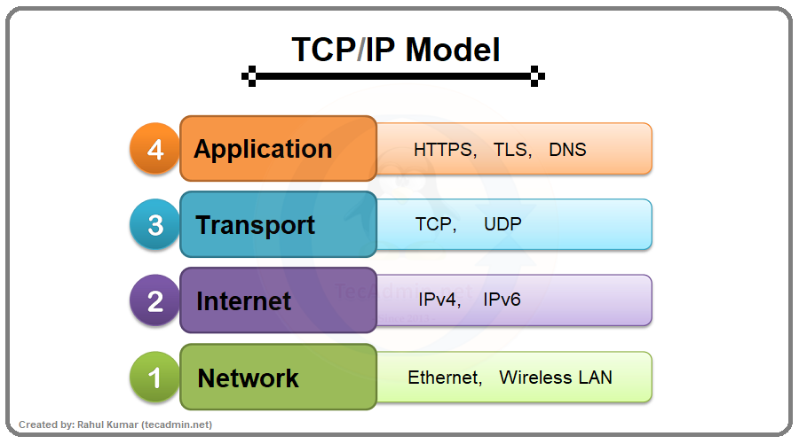

TCP/IP stands for Transmission Control Protocol / Internet Protocol. It is the fundamental set of communication rules (protocols) that govern how data is transmitted over the Internet. It defines how computers identify themselves on a network and how data is broken into packets, sent, and reassembled at the destination.
IP is responsible for addressing and routing. Every device connected to the Internet is assigned a unique IP address (e.g., 192.168.1.1). IP ensures that data packets are sent to the correct destination by reading these addresses, similar to how a postal system uses home addresses to deliver letters.
TCP is responsible for reliable delivery. It breaks data into smaller units called packets, sends them across the network, and then reassembles them in the correct order at the destination. If any packets are lost during transmission, TCP requests that they be resent.
TCP/IP is the backbone of the Internet. Without it, devices would have no standardised way to communicate. It makes it possible for computers, phones, and servers from different manufacturers and operating systems to exchange data seamlessly.

Figure: Data is broken into packets, routed via IP, and reassembled by TCP.